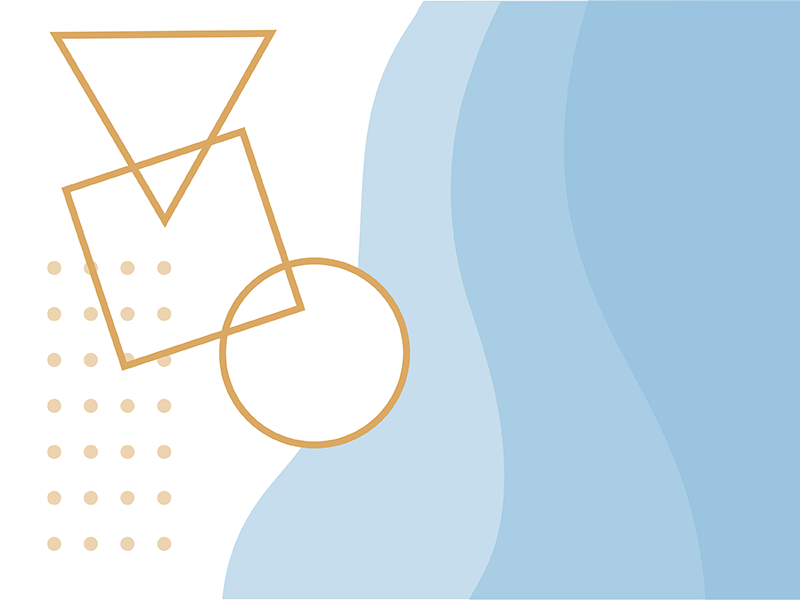
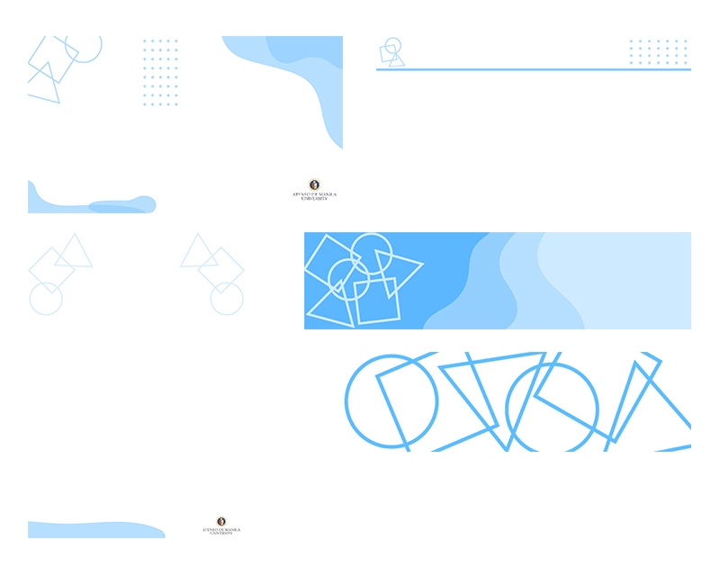
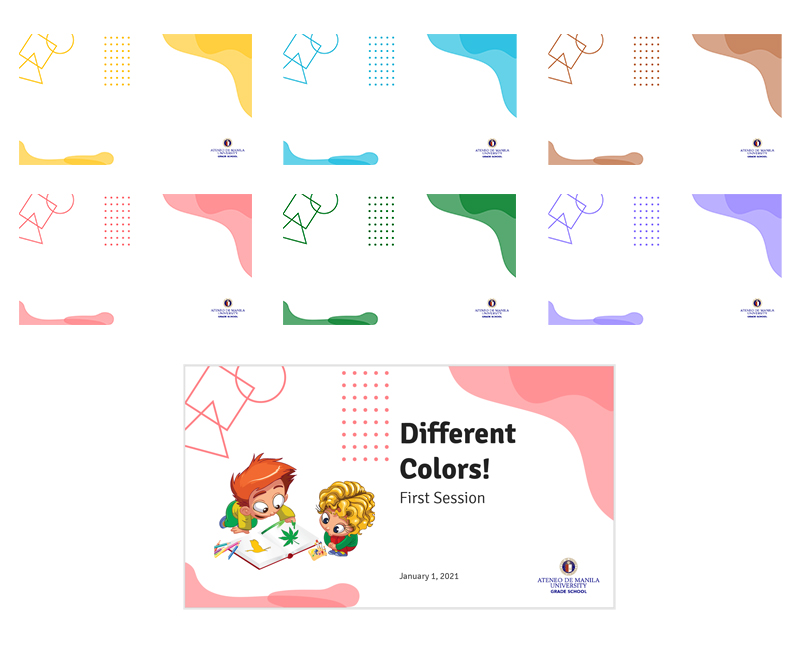

Asked to help in delivering the Ateneo Grade School's first set of online learning modules, I made these templates for the various PPTs and Word Documents they'll use for the teachers' lessons and materials.
Utilized the idea of simple shapes in accordance with how the grade school period is meant to establish these.
Figured also to provide a different color scheme for each subject, so both teacher and student can eventually remember the colors attached to each subject.
